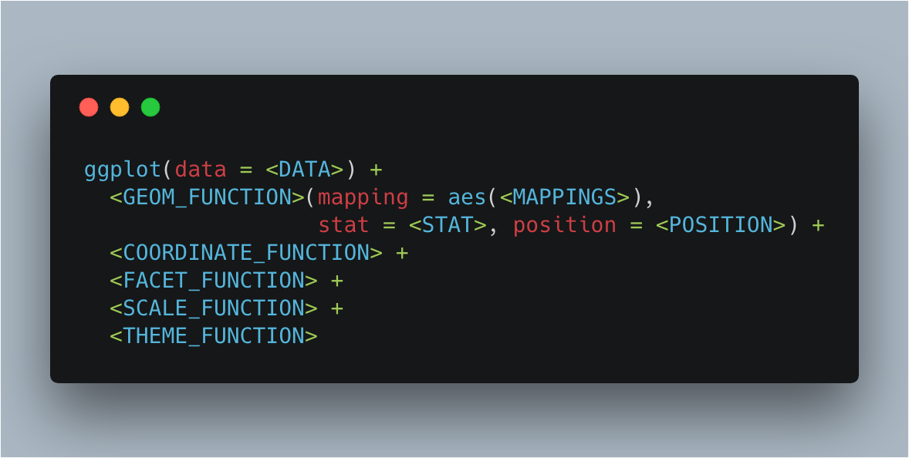

ggplot2
ggplot2 graph template

- GEOM_FUNCTION: use a geometric object to represent your data.
- MAPPINGS: associate data values with visual values. e.g., categorial data -> different colors.
- STAT: use raw data values or calculate new values from raw values.
- POSITION: adjust overlapped geometric objects.
- COORDINATE_FUNCTION: type of coordinate systems.
- FACET_FUNCTION: divide plots into subplots
- SCALE_FUNCTION: how data values are mapped to visual values.
- THEME_FUNCTION: the apperance of graph components that is not directly related to the mappings.